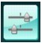

Select the language you want to be displayed according to the following procedure.
-
Press the Setup button, then wait for about 5 seconds.
-
Select  Device settings, then press the OK button.
-
Press the
 button 6 times, then press the OK button.
button 6 times, then press the OK button.If the Bluetooth unit is connected to the machine, press the
button 8 times, and then press the OK button. -
Use the
 button to select the language for the LCD, then press the OK button.
button to select the language for the LCD, then press the OK button.